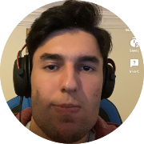

|  |
Furkan Enes ÇelikYalova Meslek Yüksekokulu 2.Sınıf Öğrencisi. Adım Furkan Enes Çelik. 7 Nisan 2002 Aydın doğumluyum. Liseden beri en çok hayalini kurduğum meslek olan programcılıkta kendimi sürekli geliştirmeye çalışıyorum. |
| Tarih | Okul |
|---|---|
| 2019-2020 | Yalova Birey Temel Lisesi |
| 2017-2018 | Çiftlikköy Atatürk Anadolu Lisesi |
| HTML5 | ⭐⭐⭐⭐⭐ |
| CSS | ⭐⭐ |
| Bootstrap | ⭐⭐ |
| C# | ⭐⭐⭐⭐ |